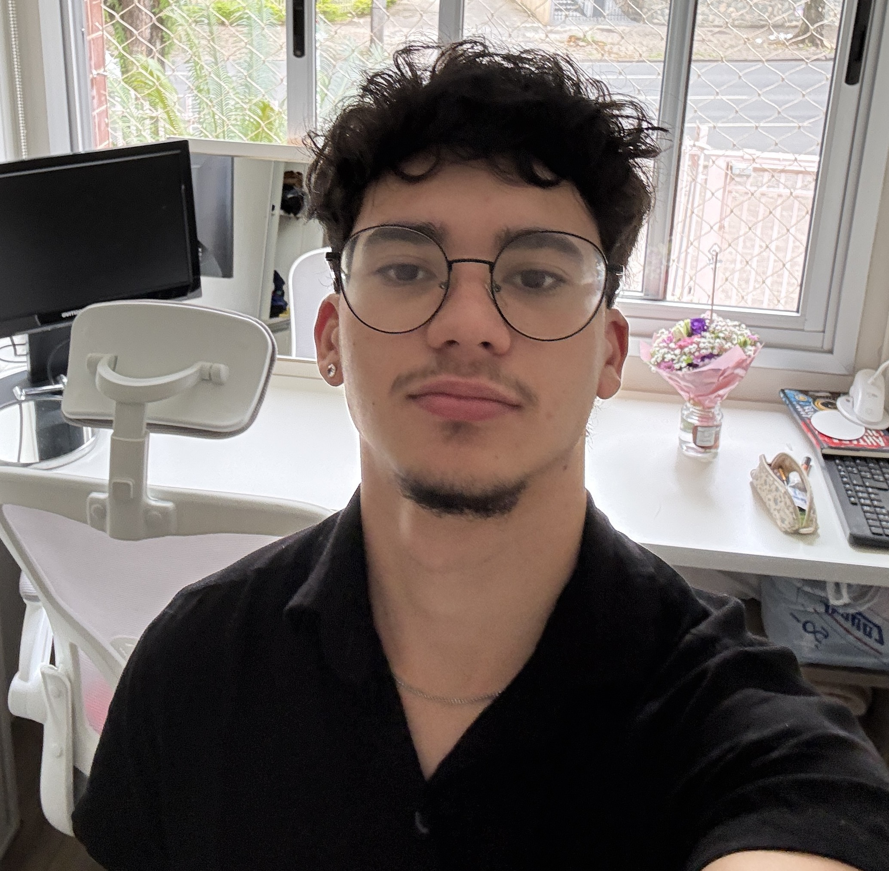
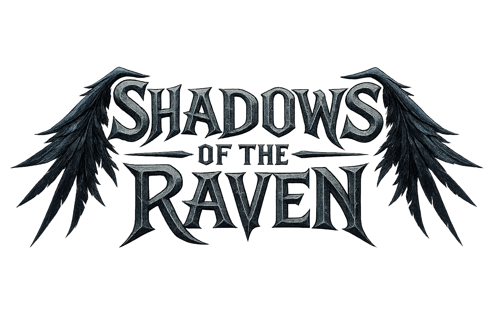
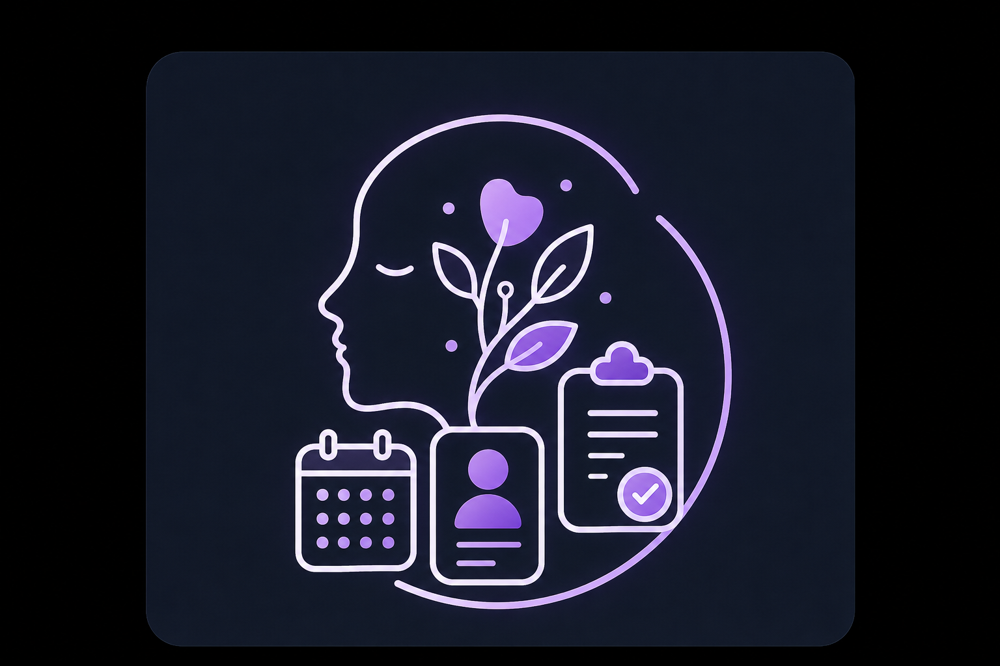
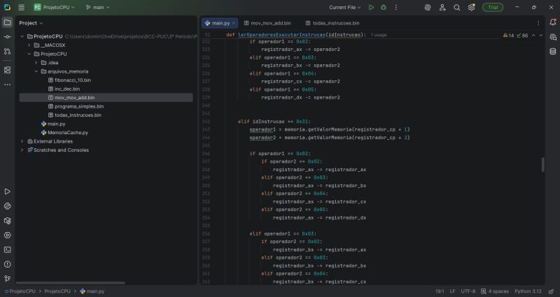

Desenvolvedor em formação com vivência internacional e paixão por construir softwares eficientes.

Estudante de Ciência da Computação apaixonado por transformar problemas complexos em software eficiente. Gosto de entender a fundo como as coisas funcionam — da lógica por trás de um algoritmo à arquitetura de um sistema completo — e de aplicar esse raciocínio na construção de soluções reais.
Minha trajetória é marcada por uma sólida bagagem internacional, com intercâmbios culturais e acadêmicos em Cape Town (África do Sul) e na Universidade de Jena (Alemanha). Essas experiências consolidaram minha autonomia, resiliência, capacidade de comunicação multicultural e fluência avançada no idioma alemão — habilidades que levo para o trabalho em equipe e para a forma como encaro novos desafios técnicos.
Hoje, meu foco é transformar a base teórica da graduação em Ciência da Computação e o curso técnico em Desenvolvimento de Sistemas, em projetos práticos e relevantes, buscando experiência real de mercado através de um estágio na área.
Curitiba, PR — Brasil
Ciência da Computação — PUC-PR
Português, Alemão (B2) e Inglês
Estágio em Tecnologia

Shadow of the Raven é um jogo 2D desenvolvido na Unity como projeto de TCC do Curso Técnico em Desenvolvimento de Sistemas.

Aplicativo mobile desenvolvido em Flutter com backend Firebase, voltado para psicólogos que precisam organizar sua rotina clínica de forma segura e eficiente.

projeto acadêmico de uma CPU virtual, capaz de executar instruções em baixo nível a partir de arquivos binários.
Desenvolvimento de fundamentos sólidos em algoritmos, estrutura de dados e engenharia de software.
Foco prático em desenvolvimento de aplicações, modelagem de banco de dados e arquitetura de sistemas.
Estudo imersivo e contato com a cultura acadêmica e tecnológica alemã através do Goethe-Institut.
Desenvolvimento intensivo de conversação em inglês e adaptabilidade cultural.